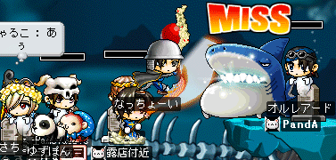

えー、出発は27日の朝からでした＾＾；
一日勘違いしていたらしくて、その。
なんとゆーかもにょもにょ
えー透過について。
作業の効率が更に上がる方法を妹に教えてもらいました。
ええそりゃもうとんでもなく早くなりました、ってか速くなりました。
マッハです(何
しかも、最適化して保存とか色数がどーとかこーとかで
単品の容量も約三分の一と相成りました(;ﾟдﾟ)
ありがとう妹。
っつーわけでどうぞ、ちゃるこですｂ
# charu@png.7z 16.30kb
それでは三日程、おさらばです。
ﾉｼ
やっぱイエペペさいこーヾ(･∀･｡)ﾉﾀﾞ-!!!!
オラオラ次はNivisちゃんだぁー！ヾ(ﾟ∀ﾟ)ﾉ
# nivis@png.7z 53.35kb
NivisCasus君、ご協力感謝です(´∀`)ﾉ
はーいどんどん出来るよーーｗ
次はカルさんだっ
# karu@png.7z 67.86kb 
すごい作業効率だ、、、。
月虹姫にっ
透過PNGの法をっ
教わったっ！
そっその方法でやればっ
フルカラーPNGが出来た！
ってか減色処理してないっ！
って事で、雪の白熊さん完成ー
# kuma@png.7z 59.43kb
今回教えてもらった透過範囲とは、元々透明な部分って概念だった。(;ﾟｪﾟ)
月虹姫：「透過色とか指定している場合じゃないわよｗ」
まじっすか
今日はスナが創っているMapleFantasy用のSS撮影会でした。
初回からは考えられないぐらいの沢山の方々に協力を得て、撮影は無事終了しました。
皆さんご協力感謝します。
で、撮影も早々に切り上げ（ぉ
zasaを連れて海中マップへ遊びにゆきがてら、急遽サメ討伐部隊が結成されました。
そして…討伐されてきましたヾ(ﾟ∀。)ﾉ 
まったく相手にされていない、なちょが笑えるｗ
で、まー
スナ以外全滅とゆー憂き目にあい、アクアリウムへ転進し（退却にあらずヾ(`д´)ﾉ
みんなで集まってワイワイ遊ぶとゆー俺の大好きなノリで、楽しい時間を過ごしましたb
－ 突然始まるメイプルまめ知識 －
ここの亀はですね…
なぜだか…
みんな…
集まってきちゃうんだ！ヾ(ﾟ∀。)ﾉ
みっちり
プッフィー(*ﾟ∀ﾟ)=3
今日は久々に元祖マイブラザー、zasaにも会えたしっ
こっそりオルさんに会うのも久しぶりだったしっ
楽しかったわーヾ(´∀`)ﾉ
…あ、やべ
オルさんのSS撮り忘れちまったよ(;´д`)

オルさん、また来てくださいね？(´･ω･`)
ｵﾜﾘ
えー、こないだ書いてた親父専用PC,ネットデビューしました。
うちのネットへの入り口、ゲートウェイは二階の妹の部屋にあるんですけどね、
二階から一階までLANケーブルを引き回すとか、そんな非現実的な事したくなかったので、
なんとか無線LANの電波を飛ばすことは出来んかなと量販店をうろついておりましたところ、NEC製Atermシリーズでいいのがありました。
なんかデスクトップマシンからちょこっとLANケーブルを伸ばして、その先にアンテナみたいな偽ルータみたいなんをつけるやつです(何
ああ、LANスイッチみたいなもんかね(´σд`)
で、あー
同じ会社で揃えると本領を発揮するとかどーとかこーとか教えてもらったので、半信半疑ながらも1万ちょい出して購入。
なんかあれですね。
近頃負け犬根性っつか、うちのインフラはまともに整わないっつー気持ちが強くなっているので知識ばっかり先行しちゃう。
○○とは！XXとは！！？ってのはよく勉強するんだけど、実際にやるとなると「あー、うちは無理やねん('A`)」とか。
やる前から諦めるっつかなんつか、、、
あーもう！ネガティブシンキングはうっとおしい！！
やめだやめだ！！(何
( ﾟ∞ﾟ)=3 ふぅ
ま、ともかくこれでうちには自由に使えるパソコンが二台あるわけだ。
…Σ(ﾟдﾟ;)ﾊｯ!
こっこれをうまく使えば！
メイポとかでピーーをピーーしてピーーーー (自主規制
さらに俺のPCと下のPCをLAN経由でピロピロポーン
えー、RSSとゆーものがあります。
ブログとかにもこっそり存在する例のアレです(何
面白そうなんでちょいと作ってみました。
→
リンク先を開いても意味不明の文字が並んでるだけなんで、上のアイコンを右クリックして"ショートカットのコピー"ってやってみてね。
あとは適当なRSSリーダーにでも登録してむる、と。
今回は過去日記を全部漁って、俺が気に入ったツールを紹介した記事に限定してリンクを貼ってみた。
RSSそのものより、リンクタグを貼り直す作業の方ががめんどくさかったんだけどね。('A`)
えー、タイトルと、冒頭の文章だけを抽出した過去ログ目次ページってのを作りたいと普段から思ってたんですけどね。
その、なんつかもう量が多すぎてやる気になれなかったのさ
そんな時、割と簡単にRSSフィードを作れるソフトってのを見つけたもんだから、こんな事をやってるわけです。
「お、手書きHTMLでも作れるのかー」みたいな。
ただ、唯一のテスト環境であるRSSリーダーはSleipnirに搭載されてるPluginなんですけどね
どうやっても古い記事が上に来る降順になっちまうんですよヽ(`д´)ﾉ
んがーなぜだー！と調べてみると、どうもRSS1.0の制限事項らしい…(´･ω･`) ｳｻﾞｽ
って事で多分これ以上RSSの更新はしないと思う。
あるいはツールとか使わないで
xmlとは？割と厳密に決まってる文法とかどんなだ？何、CGIもいるのか！？
みたいな感じに勉強してRSS2.0に対応した改造をするかもしんない。
しないかもしんない。出来ないかもしんない
まあ多分しないだろうな(´σд`)
スナへ。
次はなちょだっ
# nacho@png.7z 22.70kb
色々なポーズがあるよｂ
えー世の中にプログラムランチャは数あれど。
Fenrirほどのインパクトと軽量さとカスタマイズ性を秘めたもんは無いでしょう。いやまじで。
昔nrlauncherとかいうの使ってたけど、やっぱりスキン遊びに走っちゃうわけで。
そしたらまあ当然重くなるので段々イライラしていたりしてさ、
「わざわざランチャーなんかいらんわっヽ(`д´)ﾉ」とかなっちゃって「スタートメニュー便利ー」とか半分諦めにも似た境地に辿り着いちゃって、MS製の製品は世界一イィィィ！とか洗脳されていく過程を突き進んでしまったりしていや別にスタートメニューぐらい使ってもいいじゃんってなもんだけどさ、うむ、なんだかんだでWinは便利だし世界一普及してるOSってのも間違い無いしLinuxのウィンドウマネージャだって次第にWinに近づこうとしてるのは間違いないわけだしFedoraCoreが顕著ですわほんま、いちいちCD4枚も5枚も焼いてられっかっつのDebianを見習えっつのネー(´･д･`)ソフトウェアのアップデートはコマンドで#apt-get upgrade って打ち込むだけで済むんだぜ、これこそが世界中で愛されている理由のひとつでもあるんだろうな、少なくとも俺はもう手放せなくなってる。なんの話だっけ
ああ、暑さのせいですね(何
えー
その、、、ああそうだ
つまりですね、なんでこんなにGUI志向なんだろうと。
マウスでカチカチカチカチクリックしてフォルダ階層を潜っていくよりも、キーボードで数文字タイプして*.exeや*.txtとかの実体に辿り着けるんならそっちの方が早いに決まってる。
アイテム整理する為の階層構造も、深くなりすぎるとめんどくさくてしゃーないわっ！！
ヾ(`д´)ﾉ
と、まあFenrirはそんなアナタ(誰)にお勧めするソフトです。
今日もメイポは平和だ。
まあうまく撮れなかったわけだが('A`)
私信：スナへ。
これ、昨日アップミスってたバーテンね。
右クリックでお持ち帰りくだしゃんせ。
やっぱりメイポは楽しいですね。
どうもTEVAです。
昨日は狩り狩りな一日でした。
まー結果から言ってしまえば一日で45%経験値を稼いで、めでたく八ヶ月ぶりのレベルアップを迎えたわけですが。
つまり
狩り不精の俺が、そんな荒業が出来たのは皆さんのおかげってゆー事が言いたいわけです。
INしてすぐに、雪の白熊さん(熊さん)から内緒がありました。
「フフフ、、、」ってｗ
あまりにもひっさしぶりなので喜んで喋りまくってたんですが、現在の俺の居場所はオルビス黒光公園。
あー、黒犬ルイネルがいるところですね。
「なんでそんなとこにいるんですかｗ」と突っ込みを受けたわけですが、あー
わざわざテレポストーン使って俺の元へ赴いてくれました(;´∀`)
謝謝。
でと、ジャドバラアックス貰っちゃって！
一緒に狩りして遊びました。
何々？そんなにジャドバラアックスって沢山出るようになったのか？(;･д･)
さっきからよだれが止まらないんだけど。
狩り場所はショーワの武器庫でする事にしました。
ここも人気無くなってきてるのかねぇ。
ま、いい事だけどさ(´σд`)
まー
ドラゴンナイトとナイトで火ブルなんて無茶なわけで（ぉ
虎さん助けてーーー！ってSOS信号出したら℡ちゃんと一緒に助けに来てくれました(*´д`)
 ちょ、これ怖いんですけど
ちょ、これ怖いんですけど
夜遅くまで付き合ってくれて、この時点で経験値95%に到達。
ぶきー
狩りって大変だなぁ(´д`)
で、最後にクアと十二時さんと茄子さんとでジョイントゴーレムを六時ぐらいまでやって
めでたくレベラポー
十二時さんがお祝い叫んでくれました(*´∀`) 非常に眠たげに
と、まーとても楽しい一日でした。
皆さんありがとうございます。
大好きですよ。
ｱﾜｼﾞ
おはようこんにちはこんばんは、そしてただいま。
昼勤、夜勤、昼勤でした(;´д`)
だから今日は死んだように寝てましたよっと＾＾；
ぶきー疲れたピー(;´ω`)
えっと、昼は佐川急便で、新しく出来るジャスコへの搬入作業。
その晩は道路舗装の片側通行。
で、2時間だけ寝てからまた片側通行の現場へ。
まじで脱水症状起こしかけたわっ
ぶきー(何
閑話休題
めいぽに行ってきました。
なにやらカムイさんがLv120になったそうで！
うおー！おめでとうの気持ちでいっぱいだ！
なんつか、俺とレベルが一緒だった日があったなんて嘘みたいだ、、、(´ー`)
永遠のLv90、どうもTEVAです
でと、PandAには新しいメンバー「鮪水瀬」さんが加入していました！
彼女はクアの友達で、中々ノリの良い方です。
色々な球を返してくれます。
安心しました(何に
鮪さｎ 水瀬さん、これからよろしくお願いします(´∀`)ﾉ
カムイさん、黙示さん、さちょ、ぽよぽよにゃさんとビシャスプラントに挑戦して、死んで、ぺさんといつもの席へ。＿|￣|○
ヴァーまだ討伐に参加出来ねー
次こそはー次こそはーヾ(`д´)ﾉ
…
|д･`)…じゃあレベル上げようよ、、、。
|三 ｻｯ
|
|･`)
ちなみに「ぺさん」とは。
ぽよぽよにゃさん→ぽよ(ryにゃさん→ぽ(ryにゃさん→p(ryにゃさん→p(ryさん→ぺさん
っとゆーわけですｂ
実はこれ、微妙に気に入ってしまってる呼び方だったりします(何
ごめんなさい（ぁ
まーうん、そろそろレベル上げやってみようと思います。
思ってみます。
やってみようかな、、、
うー、まあやってみよう、、、(´σд`)
Mingにジャドバラアックス貰っちゃったしね！！(･∀･)
かっこいーヾ(´∀`)ﾉ
これはやるっきゃないでしょー！！１ヾ(´･∀･)ﾉ ﾋｬﾎｰ
ありがとうな気持ちでいっぱいのメイポでした。
ｵﾜﾘ
c(`Д´ｃ) 「萌えってなんなのさっ」
~~-v(-`д´- ｡) 「…ためらわない事さ。」
c(`Д´ｃ) 「わからないっどういう事かわからないわっ！」
~~-v(-`д´- ｡) 「…わかった、教えてやるよ…。萌えとは、萌えとはなぁ…」
こーゆー事を言うのさっ！
｡･:*:･ﾟ★,｡･:*:･ﾟ☆ ヾ(ﾟ ∀、ﾟ)ﾉ ｡･:*:･ﾟ★,｡･:*:･ﾟ☆
スナへ。
お待たせ、さちょの透過完了したぞよｂ
下記リンクからお持ち帰りくだしゃんせ。
で、これがさちょの要望ｗ
# 「があ」って言わせてーーー(ﾟ∀,ﾟ)
萌えってなんだ
ためらわない事さ
どうもTEVAです。
あっつい日が続きますね
なのに毎日雨に降られた一週間でした。
えー、普段PCでメディアを鑑賞するのに使っているプレイヤーはMediaPlayerClassic(以下MPC)なんですが。
音楽を聞くのにもうちょい便利なプレイヤーが欲しくなってしまいました。
何が不満かっつと
- 起動がちょい重い
- プレイリスト管理がちょい微妙
- タスクトレイが邪魔 ←これね
や、MPCはDVDとか*.flvとか、どんな形式でも再生出来るのでとても便利なんですが、、、
どうしてもなんか、気になってしまうんですよね。
せっかく軽いのになんでそんなにかさばるの？みたいな。
で、色々探して、最終的に、めっちゃ軽くてプレイリスト管理が素敵で暴力的にシンプルなfoobar2000を使うことにしました。
これはプラグインで様々な機能を追加したり、逆にいらない機能は削除したり出来るプレイヤー。
GUIもこんな感じにとってもシンプル。
今回の不満点は、「Taskbar Button Remover」とゆータイトルそのまんまのプラグインを使えばよろしい。
これで最小化してもタスクバーを占有しなくなる。
しかし、選曲するたびにAlt+TabとかでいちいちGUIを呼び出していたのでは、なんの為にこのプラグインを導入したのかがわからなくなり、それならばタスクバーのボタンを消さない方がよっぽど便利に使えるとゆー事になる。
でも大丈夫。
そんな不満も解消してくれるプラグインもちゃんとありました。
そのプラグインの名は「Advanced Controls」
こっこれを使えば！
タスクトレイに極小のコントロールボタンを表示してくれるようになるのです！
やヴぇ、ツボった。(*´д`)=3
かなりツボに入った。
使ってみるとわかります、これ超便利です。
まったく作業の邪魔にならない。目障りでも無い。しかも軽い。
あー、欲しい機能をドンピシャで追加出来るこの感覚、たまりまへんなぁ
で、さらに便利な事に、現在再生してる曲をバルーンメッセージで表示してくれちゃうのですｂ
プレイリストさえ整理しておけば、もうGUIいらねってぐらい便利ですよっヾ(ﾟ∀ﾟ )ﾉ
使え、いいから使え。
ってゆーかなんで使わないの？オラオラ
ｵﾜﾘ
- おまけ -
File→Preferences→Display→Title Formatting…
と辿ればプレイリストの表記を変更できるのですが、初期状態だと微妙にわかりづらいんですわ。
そこで俺が編集した
「インデックスナンバー トラックナンバー タイトル アーティスト名 長さ アルバム名」
…の順番に幅を自動調整してくれる書式を公開してみたり。
生意気に。
コピペで持っていってねー
%list_index% : [ #%tracknumber%] %title%
$tab()
['Artist / '%track artist%]
$tab()
%length% %album% %discnumber%
ぶひー
夜勤→昼勤→寝る→夜勤→昼勤→寝る
こんな毎日です。
やると言ったらとことんですね。
最近、事務所にいる時間長いわー
えー、しかしですね、昨晩の夜勤は急に取りやめになってしまいましたのです。
なんか薬丸系の別会社にその晩やる予定だった仕事を横取りされたとかなんとか。
だから今日はとても良く眠れました(´∀`)
20時間ぐらい。
で、その仕事無くなった日に食べに連れて行ってもらったんです。
その。ダーツバーって奴に。
超おしゃれな雰囲気。
でも俺、超適当な服だったんですね。
やべぇ
居住まい悪い(;´д`)
えー、まあ服が適当だからって追い出されるわけでも無いからいいんだけど、、、なんか、ね(;´_`)
まあダーツやったわけですよ、20セットぐらい。
あれ、面白いですね
ブルに当たるととても気持ちがいい！(･∀･)
で、これがその日の戦果です＿|￣|○
うおーすげー！
俺が村人Xとして登場してるよー(*ﾟ∀ﾟ)
ってかフリオニールがちょこちょこ歩いてるーかわいーｗ
# MapleFantasy試作マップ
Created by すな
えー…
柄にも無く取り乱してしまいました。
Be Cool, Be Cool,,,,(´-ω-`)
んとですね。
日々開発の進んでいるMapleFantasyですが。
爆発エフェクトを追加して戦闘シーンに華を！
とか思いついたのです。
なのでHSP(Hot Soup Processor)を扱う凄い人、MIA様のHPをスナに紹介してみる。
えー、上記リンクを辿り、Software→「発色弾」ってソフトをダウンロードしてみておくれ。
これ使えば、ちょー簡単に爆炎が生成出来ちゃうのだ。
しかも作った爆炎はBMP方面でこんな感じに保存出来ちゃう。
# これが生成された爆炎。WEB用に縮小してあるので悪しからず。
これ、昔HSPで遊んでた時から知ってたソフトなんだけど、使い道が無かったからずっと忘れてたんだよね。
で、今回もしかしたら日の目を見るかもー、って思った次第です。
容量とか許容範囲内で、ソース大改造しなくても済むようならば、一度試してみておくれ(･∀･)
どかーどかーん、今日も明日もどかーどかーんヾ(ﾟ∀,ﾟ)ﾉ
因みに
生成された一枚絵BMPのアニメーション加工方法、わかりましぇん（ぉ
一個一個切り取ってgifアニメとか、モーショントゥイーンとかしてみてはどーだろーか。
七月に入りました。
四月はまだかな（ぉ
スナへ。
透過作業完了しました。
下記リンクよりお持ち帰りくだせぇｂ
# TEVA@png.7z 94.8kb
えと、サイズを小さくする為、7z形式での圧縮なのだ。
適当なアーカイバ使って解凍してねん(･ω･ )
えー、現在は「7-zip 4.42 日本語パッケージ」が最新版ですね。
7zip大好き（ぁ


{kind=link}
{kind=link}